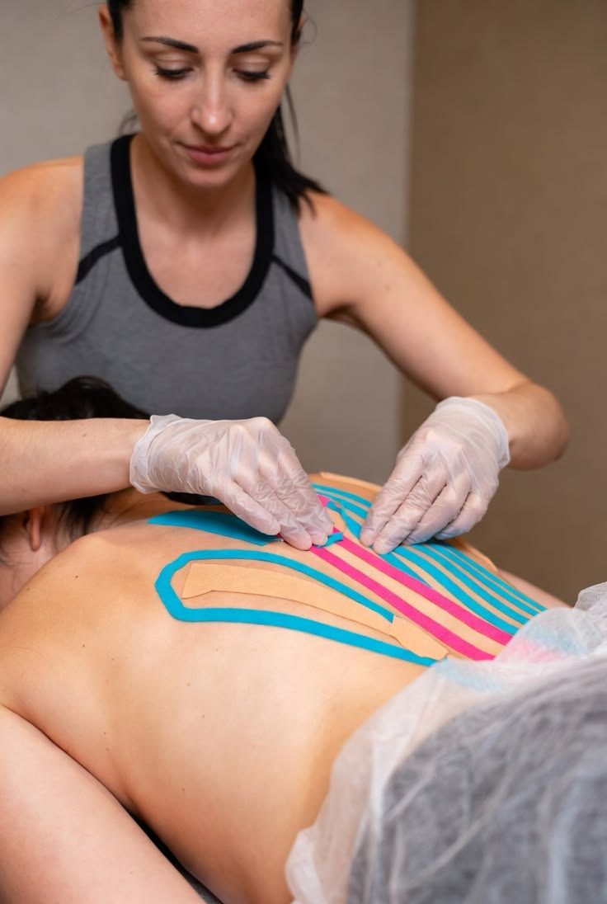

Therapeutic taping techniques designed to support muscles, joints and movement during rehabilitation.

Taping therapy is a physiotherapy technique where specialized tape is applied to selected areas of the body to provide additional support.
It can be used as part of a rehabilitation program depending on the patient's condition, movement requirements and physiotherapist's assessment.
Taping techniques are selected according to the patient's individual requirements.
Elastic therapeutic tape used to provide support while maintaining movement.
Provides additional support during sports and physical activities.
Applied to targeted muscles according to the rehabilitation requirement.
Provides external support around selected joints during rehabilitation.
Provides additional external support to targeted muscles.
Can provide support around selected joints during movement.
Can be incorporated into functional rehabilitation programs.
May be used as part of sports injury rehabilitation.
Physiotherapist assesses your condition and movement.
Suitable taping technique is selected according to your needs.
Tape is carefully applied to the targeted area.
Your response is monitored during the rehabilitation program.
Taping therapy uses specialized therapeutic tape to provide support to selected muscles and joints.
Properly applied tape is generally comfortable. Any skin irritation or discomfort should be reported to your physiotherapist.
Duration depends on the type of tape, skin condition, activity and treatment plan.
Yes. Taping may be included in sports rehabilitation programs when clinically appropriate.
Book an assessment with our physiotherapy team.